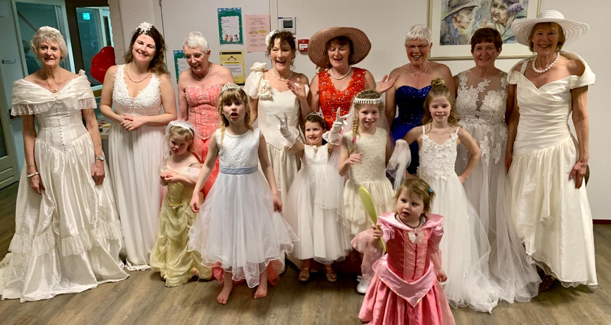

<div style="margin: 5px;">
  <h4 style="color: red;text-decoration: underline;"> Kosten  party </h4>
  <b>Gewijzigde bedragen  per 1-1-2025: </b><br>
  <br>
  Kosten bedragen per 1-1-2025  23 euro per persoon. <br>
  Voor mensen die afspreken voor 15 januari 2025. ( party kan later in het jaar plaatsvinden)  geldt de prijs van 2024 , is 20 euro per persoon. <br>
  <br> 
Party duurt 2 uur. <br>
Als je met 2 personen komt, betaal je ook 23 euro per persoon maar duurt de party anderhalf uur. <br>
Kinderen tot 12 jaar zijn ook welkom en betalen 15 euro per kind. <br>
Kosten zijn inclusief koffie en thee en een glas bubbelwijn <br>
<br>

Voor de bruidsshows binnen verenigingen, instellingen en verzorgingshuizen gelden andere prijzen.<br>
 Dit is naar gelang de wensen en de afstand . Omdat de modellen vrijwillig meedoen zullen de kosten niet meer dan 200 euro in totaal bedragen. <br> 
</div>

